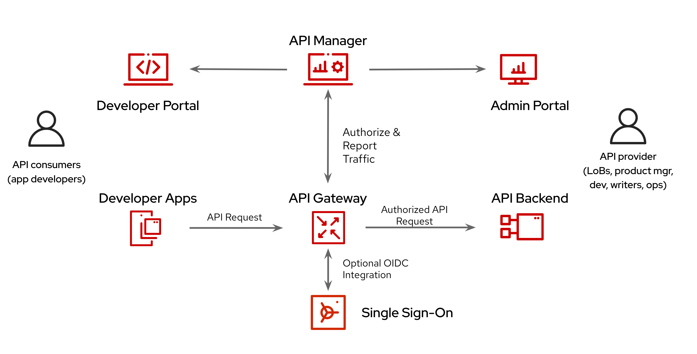
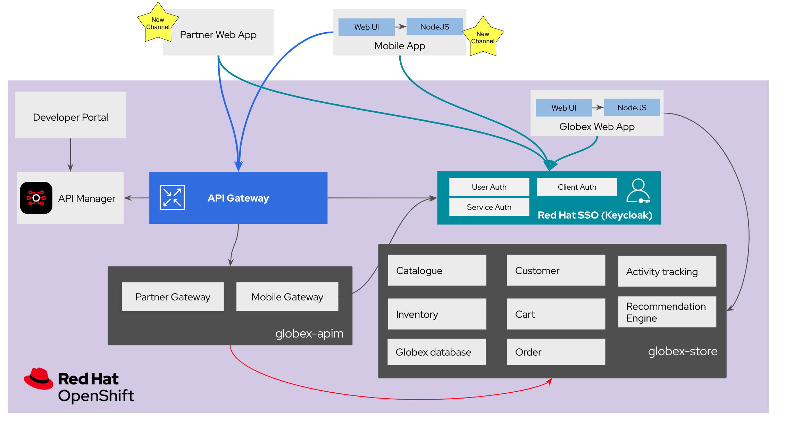

In this module you discover how Contract First Approach provides the right framework to acclerate launching new channels in a secure way across internal and external teams to build microservices and APIs based systems. Business context As mentioned in the introduction module of the workshop, Globex went through a modernization phase for their retail web application, moving from a legacy monolith to a containerized application. With their growing popularity, Globex would like to add new channels to their existing, web-based e-commerce application. They are working towards launching their own Globex Mobile App and partnering with other large retail portals. This requires formalizing the application API definitions and exposing the APIs through a API Management solution for consumption by the Globex Mobile App and by Partner Portals. (a) Mobile App Globex would like to launch a mobile application as well in addition to the retail web-site. Globex does not have the necessary expertise in mobile development, so development will have to be outsourced. This means that, the mobile application will also need secure access to the Globex APIs (b) Partner Portal Retail partner aggregators would like to showcase Globex’s product catalogue on their website To allow for this access, Globex would like to expose an API to allow access to their APIs Technical considerations The new requirements to expand Globex’s business by adding additional channels bring its own set of challenges Lack of a standardised API format makes it a serious challenge in gaining access the data needed from Globex Launching a Mobile App is difficult because it would be tightly coupled with the e-commerce retail application’s core services Inter-dependencies between various teams during the dev phase can slow down the dev productivity and time to market. Lack of governance and inadvertent changes to the services can lead to adverse effect on the dev teams Globex decides to adopt a Contract First approach before tackling the development of new services with the API contract being formalized in as OpenAPI specifications. With Contract-First, all the relevant parties including the Globex core team, internal teams, mobile teams, and 3rd party partner aggregators are on the same page before writing the first line of code. Once a first version of the OpenAPI spec document is ready, it is pushed and managed in a service registry, which acts a the system of truth. Mocks are created for the API so as to enable parallel development streams. [Click to know] What is an OpenAPI? The OpenAPI Specification (OAS) provides a consistent means to carry information through each stage of the API lifecycle. It is a specification language for HTTP APIs that defines structure and syntax in a way that is not wedded to the programming language the API is created in. API specifications are typically written in YAML or JSON, allowing for easy sharing and consumption of the specification. The team introduces Red Hat 3scale API management to expose, secure and manage the APIs to the core application backend services. To make this a reality a number of components are brought together to realise the final solution Red Hat SSO Globex uses Red Hat SSO to provide single sign-on (SSO) capabilities to Users, Web apps and APIs. In this case, OpenID Connect is used to authenticate a user (Globex Web and Mobile users) and also allow secured access to Globex’s APIs [Click to know] What is an OpenID Connect? OpenID Connect (OIDC) is a simple identity layer on top of the popular OAuth framework (i.e. it verifies the user by obtaining basic profile information and using an authentication server). It is built on top of OAuth 2.0 that complements the OAuth 2.0 Authorization framework with an authentication mechanism. When OpenID Connect authentication option is used, the API requests are authenticated using the access tokens in the JSON Web Token (JWT) format (RFC 7519). API Designer Red Hat API Designer based on Apicurio provides web based API Designer tool. You will use this a draft OpenAPI file from your local file system and visually edit it (and then save it back to your disk)! Service Registry Publish the OpenAPIs and makes the OpenAPIs accessible. The REST endpoint of the artifact (APIs) is used to create ActiveDocs within the API Management platform. Click to learn amore about Service Registry Service Registry is a datastore for sharing standard event schemas and API designs across API and event-driven architectures. You can use Service Registry to decouple the structure of your data from your client applications, and to share and manage your data types and API descriptions at runtime using a REST interface. You can upload new artifacts, new versions, view the metadata, download the specs, view documentation and view the content as well. Through Content rules one can validate new versions of the APIs against the existing specs to ensure validity and backward compatibility. Service Registry acts as the single source of truth for the OpenAPI Specifications. This spec can be used to share and manage the data types and API descriptions at runtime using a REST interface with internal teams and other external developers and partners. 3scale API Management Red Hat 3scale API Management platform is used to publish, manage and secure the backend APIs. API Management helps you to define, deploy, consume, or publish your APIs for use by other developers, channels and partners. In this workshop, you will work with OpenID Connect to secure the APIs. Mobile developers and Partners can sign up to APIs via the 3scale Developer Portal, and also track their usage through analytics.  Backend Services Not all of Globex’s services are made available in the first iteration for access by Mobile and Partners. The Backend For Frontend (BFF) services are generated based on the OpenAPI Specs Click to learn more about Code Generation The server-side code for the Mobile Gateway has been built using the Apicurio Codegen Quarkus Extension You can use the Quarkus extension from Quarkiverse to generate Rest Clients based on OpenAPI specification files. Mobile App For the first iteration, the Mobile App is built using Angular + NodeJS. This app uses angular-auth-oidc-client to enable user SSO. A graphical representation of the architecture:  Implementation In the next chapter, you will be guided through the implementation and deployment of the Contract First Approach. Of course this entails way more than can be achieved during a workshop, so instead most components are already in place, and you will focus on a number of key activities to deploy and run the solution.